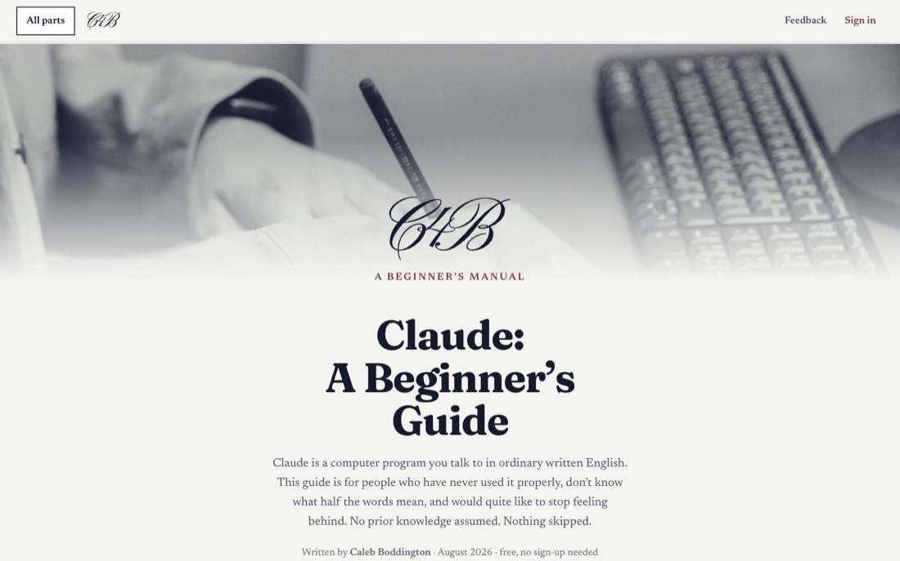
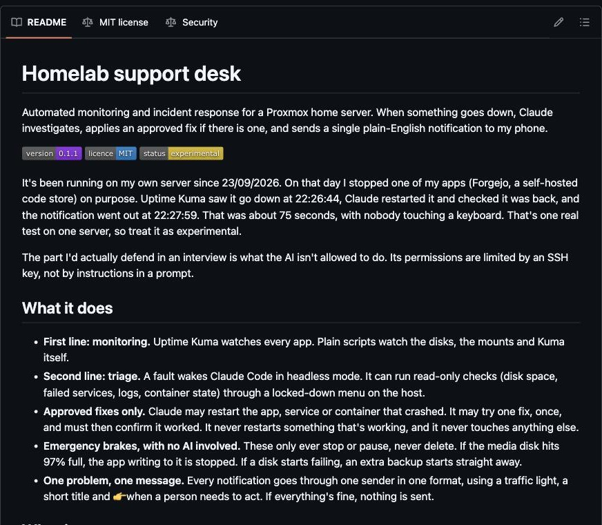
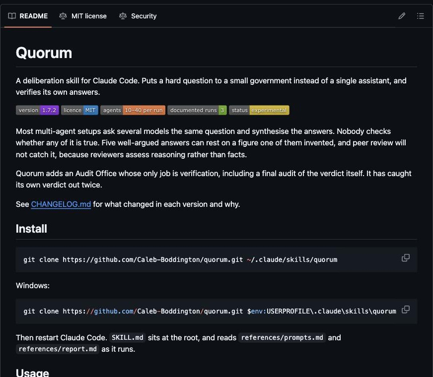
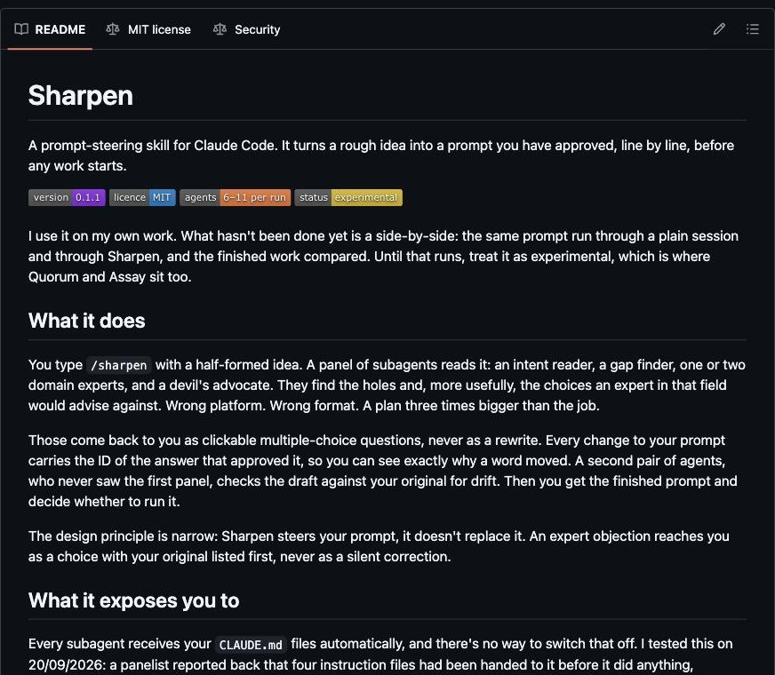
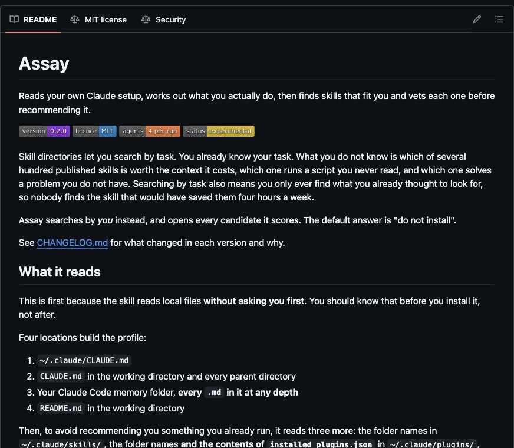

Claude for Beginners

A free guide to Claude, the AI assistant, for people who've never used it. It's fifteen parts long, starts from nothing, and you don't have to sign up to read it.
A Python script builds the whole site from one source file, and it's hosted on Netlify.
Visit the siteHomelab support desk

My home server keeps an eye on itself. If an app falls over, Claude looks into it, restarts it if that's all it needs, and sends a message to my phone.
On 23/09/2026 I broke one of my apps on purpose. It was fixed and I had the message 75 seconds later, without touching a keyboard. The AI can only run commands I've approved, and an SSH key locks that in.
View on GitHubQuorum

A tool for Claude Code that puts a hard question to a panel of AI agents instead of just one. They research it separately, another agent checks their facts, and a last one audits the final answer.
It has caught its own verdict out twice, which is the whole point of it.
View on GitHubSharpen

Turns a rough idea into a proper brief before any work starts. A panel of agents picks holes in it and sends the problems back as questions for me to answer.
View on GitHubAssay

Reads how I actually use Claude, then hunts for add-ons that fit and scores each one out of 25. It won't rate anything it hasn't opened, and its default answer is don't install.
View on GitHub